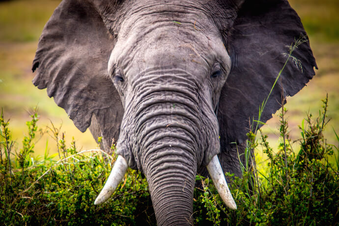

African Elephant

Exactly how big are elephants? Really big! Asian elephants, which tend to be smaller than their African counterparts, can weigh between 5,000 and 11,000 pounds (2,268 and 4,989 kilograms).
African elephants can range from 5,000 pounds to more than 14,000 pounds (6,350 kilograms).
According to the World Wildlife Fund, an average African elephant weighs about 12,000 pounds (5,443 kilograms). Even a baby African elephant can weigh between 200-300 pounds (90.7-136 kilograms) at birth!
The largest African elephants can stand in excess of 13 feet (4 meters) tall at the shoulder. How does an African elephant grow to be 13 feet tall and weigh over 14,000 pounds? By eating a lot! Scientists estimate that the largest elephants can eat more than 300 pounds of food in a single day.